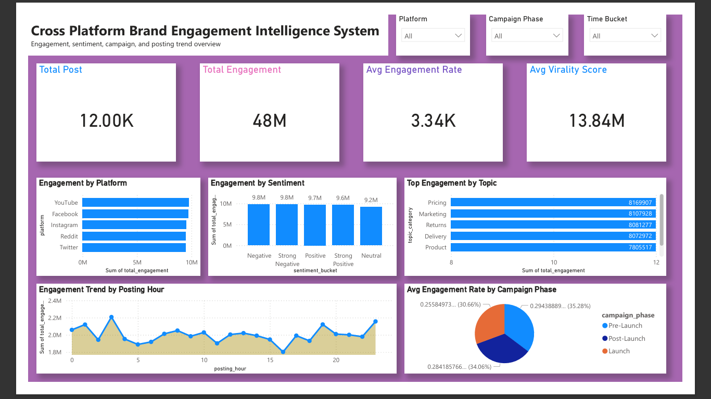
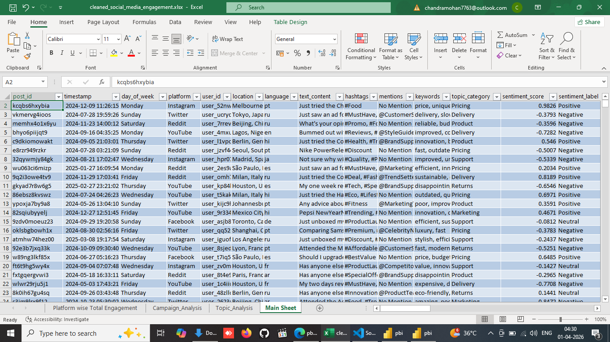
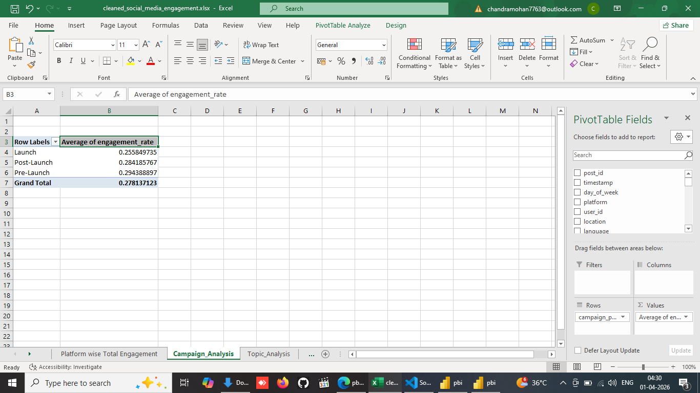
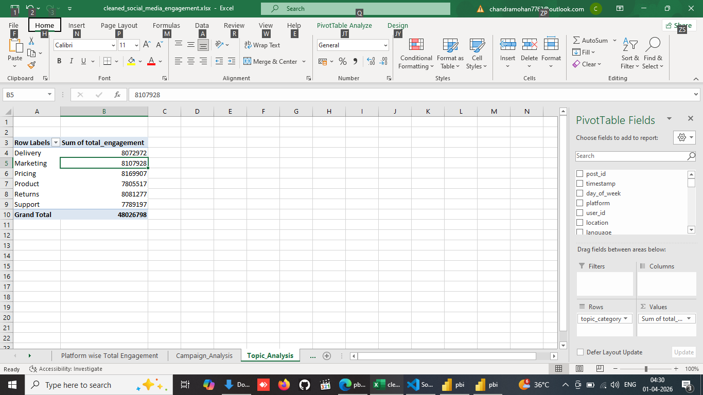
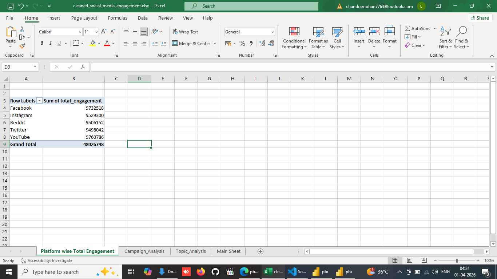

Project Overview
This project is an end-to-end data analytics system built to analyze social media engagement across multiple platforms.
It combines Python for data cleaning and feature engineering, SQL for business-focused analysis, Excel for Pivot Table summaries,
and Power BI for final dashboard presentation.
Tools Used
Python
Pandas
NumPy
SQL
Excel
Power BI
Jupyter Notebook
Project Workflow
Python → SQL → Excel → Power BI
The workflow starts with cleaning and transforming the raw social media dataset in Python,
followed by business-focused SQL analysis, quick Excel Pivot summaries, and finally a polished Power BI dashboard.
Important Engineered Features
- total_engagement
- posting_hour
- posting_month
- posting_time_bucket
- sentiment_bucket
- toxicity_flag
- engagement_per_1000_impressions
- virality_score
- engagement_quality_flag
SQL Analysis Highlights
- Platform-wise total engagement
- Campaign phase-wise average engagement rate
- Sentiment bucket-wise total engagement
- Topic category-wise total engagement
- Platform-wise total posts
- Platform-wise average virality score
- Best posting time by platform
- Campaign phase performance by platform
- Best content topic by platform
Power BI Dashboard

Power BI Dashboard
Excel Analysis Screenshots

Excel Main Sheet

Campaign Analysis Pivot

Topic Analysis Pivot

Total Engagement Pivot
Key Business Insights
- Identified stronger-performing platforms using engagement and virality metrics
- Compared campaign phases to understand which phase performs better
- Analyzed topic categories to identify higher-engagement content themes
- Studied posting-time patterns to find better engagement windows
- Used sentiment and toxicity features to improve content quality analysis
Project Purpose
This project was built for portfolio development and to demonstrate practical end-to-end analytics skills.
It is especially useful for Data Analyst roles requiring Python, SQL, Excel, and Power BI together.